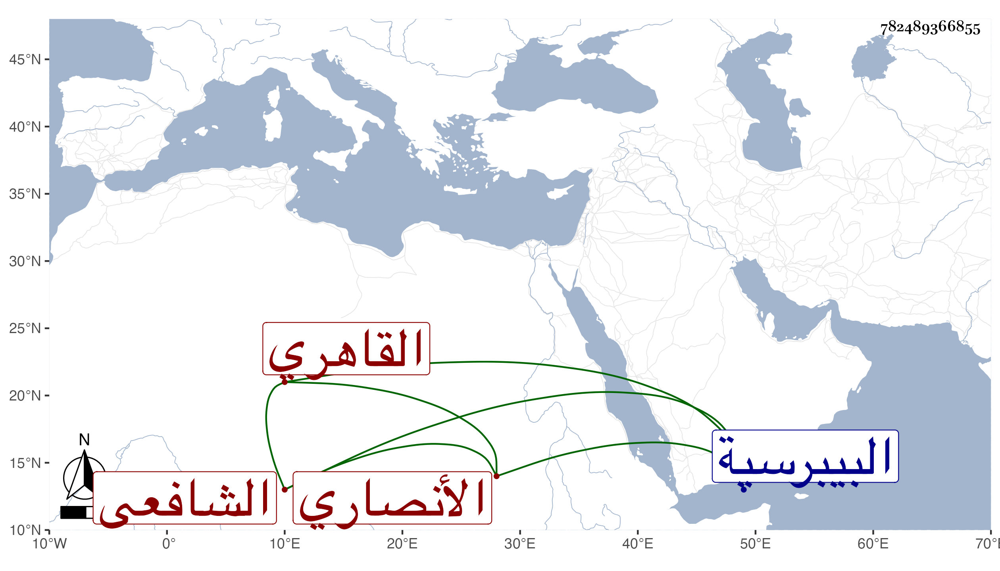

0902Sakhawi.DawLamic.ITO20230111-ara1.EIS1600.782489366855
Biography ID: 782489366855
539
أحمد بن محمد بن محمد الشهاب بن الصدر بن الصلاح الأنصاري القاهري الشافعي ويعرف بابن صدر الدين . ولد سنة خمس وتسعين وسبعمائة تقريبا ونشأ فحفظ القرآن والمنهاج رفيقا للوالد عند الفقيه الشمس السعودي وعرض علي جماعة واشتغل قليلا وسمع شيخنا وغيره ومما سمعه ختم البخاري بالظاهرية وتنزل بالبيبرسية وتكسب بالشهادة في حانوت باب القوس داخل باب القنطرة وفي سوق الرقيق ولم يكن فيها بالماهر معرفة وخطا ولكنه كان لا بأس به سكونا ومحافظة على الجماعة ثم انجماعا واقتصادا في معيشته مع دريهمات بيده ربما يعامل فيها وقد حج غير مرة وجاور . مات في ليلة الاثنين منتصف رمضان سنة أربع وثمانين وصلى عليه من الغد ودفن بحوش البيبرسية وأوصى بثلثه لمعينين وغيرهم رحمه الله وإيانا .
